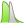

Docs for ‘QGIS testing’. Visit http://docs.qgis.org/2.14 for QGIS 2.14 docs and translations.
Georeferencer Plugin¶
The Georeferencer Plugin is a tool for generating world files for rasters. It allows you to reference rasters to geographic or projected coordinate systems by creating a new GeoTiff or by adding a world file to the existing image. The basic approach to georeferencing a raster is to locate points on the raster for which you can accurately determine coordinates.
Features
| Icon | Purpose | Icon | Purpose |
|---|---|---|---|
 |
Open raster |  |
Start georeferencing |
 |
Generate GDAL Script | Load GCP Points | |
| Save GCP Points As |  |
Transformation settings | |
 |
Add Point |  |
Delete Point |
 |
Move GCP Point |  |
Pan |
 |
Zoom In |  |
Zoom Out |
 |
Zoom To Layer |  |
Zoom Last |
 |
Zoom Next |  |
Link Georeferencer to QGIS |
| Link QGIS to Georeferencer |  |
Full histogram stretch | |
|  | Local histogram stretch |
{kind=link}
{kind=link}
{kind=link}
{kind=link}
Table Georeferencer 1: Georeferencer Tools
Usual procedure¶
As X and Y coordinates (DMS (dd mm ss.ss), DD (dd.dd) or projected coordinates (mmmm.mm)), which correspond with the selected point on the image, two alternative procedures can be used:
- The raster itself sometimes provides crosses with coordinates “written” on the image. In this case, you can enter the coordinates manually.
- Using already georeferenced layers. This can be either vector or raster data that contain the same objects/features that you have on the image that you want to georeference and with the projection that you want for your image. In this case, you can enter the coordinates by clicking on the reference dataset loaded in the QGIS map canvas.
The usual procedure for georeferencing an image involves selecting multiple points on the raster, specifying their coordinates, and choosing a relevant transformation type. Based on the input parameters and data, the plugin will compute the world file parameters. The more coordinates you provide, the better the result will be.
The first step is to start QGIS, load the Georeferencer Plugin (see The Plugins Dialog) and click on Raster ‣ Georeferencer , which appears in the QGIS menu bar. The Georeferencer Plugin dialog appears as shown in figure_georeferencer_1.
For this example, we are using a topo sheet of South Dakota from SDGS. It can later be visualized together with the data from the GRASS spearfish60 location. You can download the topo sheet here: http://grass.osgeo.org/sampledata/spearfish_toposheet.tar.gz.
Figure Georeferencer 1:
Georeferencer Plugin Dialog 
Entering ground control points (GCPs)¶
- To start georeferencing an unreferenced raster, we must load it using the
button. The raster will show up in the main working
area of the dialog. Once the raster is loaded, we can start to enter reference
points.
- Using the Add Point button, add points to the
main working area and enter their coordinates (see Figure figure_georeferencer_2).
For this procedure you have three options:
- Click on a point in the raster image and enter the X and Y coordinates manually.
- Click on a point in the raster image and choose the
 From map canvas button to add the X and Y coordinates with the help of a
georeferenced map already loaded in the QGIS map canvas.
From map canvas button to add the X and Y coordinates with the help of a
georeferenced map already loaded in the QGIS map canvas. - With the button, you can move the GCPs in both windows,
if they are at the wrong place.
- Continue entering points. You should have at least four points, and the more coordinates you can provide, the better the result will be. There are additional tools on the plugin dialog to zoom and pan the working area in order to locate a relevant set of GCP points.
Figure Georeferencer 2:
Add points to the raster image
The points that are added to the map will be stored in a separate text file ([filename].points) usually together with the raster image. This allows us to reopen the Georeferencer plugin at a later date and add new points or delete existing ones to optimize the result. The points file contains values of the form: mapX, mapY, pixelX, pixelY. You can use the Load GCP points and Save GCP points as buttons to manage the files.
Defining the transformation settings¶
After you have added your GCPs to the raster image, you need to define the transformation settings for the georeferencing process.
Figure Georeferencer 3:
Defining the georeferencer transformation settings
Available Transformation algorithms¶
Depending on how many ground control points you have captured, you may want to use different transformation algorithms. Choice of transformation algorithm is also dependent on the type and quality of input data and the amount of geometric distortion that you are willing to introduce to the final result.
Currently, the following Transformation types are available:
- The Linear algorithm is used to create a world file and is different from the other algorithms, as it does not actually transform the raster. This algorithm likely won’t be sufficient if you are dealing with scanned material.
- The Helmert transformation performs simple scaling and rotation transformations.
- The Polynomial algorithms 1-3 are among the most widely used algorithms introduced to match source and destination ground control points. The most widely used polynomial algorithm is the second-order polynomial transformation, which allows some curvature. First-order polynomial transformation (affine) preserves collinearity and allows scaling, translation and rotation only.
- The Thin Plate Spline (TPS) algorithm is a more modern georeferencing method, which is able to introduce local deformations in the data. This algorithm is useful when very low quality originals are being georeferenced.
- The Projective transformation is a linear rotation and translation of coordinates.
Define the Resampling method¶
The type of resampling you choose will likely depending on your input data and the ultimate objective of the exercise. If you don’t want to change statistics of the image, you might want to choose ‘Nearest neighbour’, whereas a ‘Cubic resampling’ will likely provide a more smoothed result.
It is possible to choose between five different resampling methods:
- Nearest neighbour
- Linear
- Cubic
- Cubic Spline
- Lanczos
Define the transformation settings¶
There are several options that need to be defined for the georeferenced output raster.
- The
 Create world file checkbox is only available if you
decide to use the linear transformation type, because this means that the
raster image actually won’t be transformed. In this case, the
Output raster field is not activated, because only a new world file will
be created.
Create world file checkbox is only available if you
decide to use the linear transformation type, because this means that the
raster image actually won’t be transformed. In this case, the
Output raster field is not activated, because only a new world file will
be created. - For all other transformation types, you have to define an Output raster. As default, a new file ([filename]_modified) will be created in the same folder together with the original raster image.
- As a next step, you have to define the Target SRS (Spatial Reference System) for the georeferenced raster (see Working with Projections).
- If you like, you can generate a pdf map and also a pdf report. The report includes information about the used transformation parameters, an image of the residuals and a list with all GCPs and their RMS errors.
- Furthermore, you can activate the Set Target Resolution
checkbox and define the pixel resolution of the output raster. Default horizontal
and vertical resolution is 1.
- The Use 0 for transparency when needed can be activated,
if pixels with the value 0 shall be visualized transparent. In our example
toposheet, all white areas would be transparent.
- Finally, Load in QGIS when done loads the output raster
automatically into the QGIS map canvas when the transformation is done.
Show and adapt raster properties¶
Clicking on the Raster properties dialog in the Settings menu opens the raster properties of the layer that you want to georeference.
Configure the georeferencer¶
- You can define whether you want to show GCP coordinates and/or IDs.
- As residual units, pixels and map units can be chosen.
- For the PDF report, a left and right margin can be defined and you can also set the paper size for the PDF map.
- Finally, you can activate to Show Georeferencer window docked.
Running the transformation¶
After all GCPs have been collected and all transformation settings are defined,
just press the Start georeferencing button to create
the new georeferenced raster.